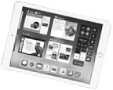

Versterk je onderwijs door
eenduidige en betrouwbare
informatievoorziening voor student,
ouders en docent.
Wat doen wij?
Iddink is een innovatieve onderneming die het secundair onderwijs voorziet van Digitaal Leren, Leermiddelenfondsen,
Beleidsinformatie (BI) en Partnerships. Elk van deze vier domeinen leidt tot ontzorging en meerwaarde voor scholen,
leerlingen
en leerkrachten. Met meer dan 160.000 leerlingen in het Vlaams secundair onderwijs tonen wij onze
betrouwbaarheid als
onafhankelijke partner.
REGISTREER EN MAAK KANS OP EEN IPAD
Nieuw! Digitaal Leren ook voor leerkrachten
Leerkrachten krijgen vanaf nu kosteloos een eigen leerplatform waarmee ze de digitale boekentas op maat van elke klas kunnen samenstellen.
Lees meer
Nieuw! Digitaal Leren ook voor leerkrachten
Leerkrachten krijgen vanaf nu kosteloos een eigen leerplatform waarmee ze de digitale boekentas op maat van elke klas kunnen samenstellen.
Lees meer
Nieuw! Digitaal Leren ook voor leerkrachten
Leerkrachten krijgen vanaf nu kosteloos een eigen leerplatform waarmee ze de digitale boekentas op maat van elke klas kunnen samenstellen.
Lees meer
Nieuw! Digitaal Leren ook voor leerkrachten
Leerkrachten krijgen vanaf nu kosteloos een eigen leerplatform waarmee ze de digitale boekentas op maat van elke klas kunnen samenstellen.
Lees meer
iPad winactie

We nodigen leerkrachten uit om zich te registreren.
En als u zich inschrijft voor 31 december 2018, dan maakt u ook nog
eens kans op één van de vijf iPads! Deze verloten wij onder
leerkrachten in het secundair onderwijs. Zo kan ook u het comfort van
het gratis Iddink digitale
leerplatform ontdekken.
Neem contact met ons op
Heeft u een vraag, een opmerking of bent u benieuwd naar wat de Eduarte dienstverlening voor uw
onderwijsinstelling kan betekenen? Klik op onderstaande button en neem contact met ons op. Wij staan graag voor
u klaar!